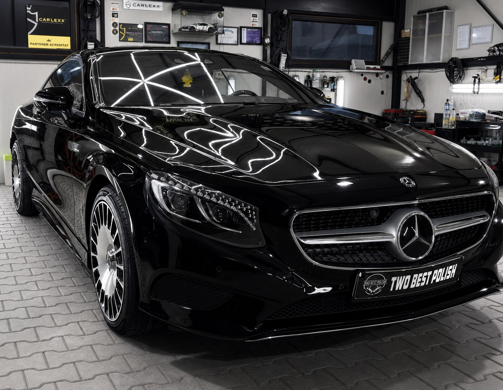
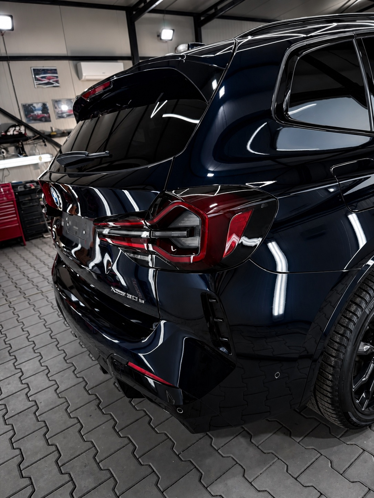
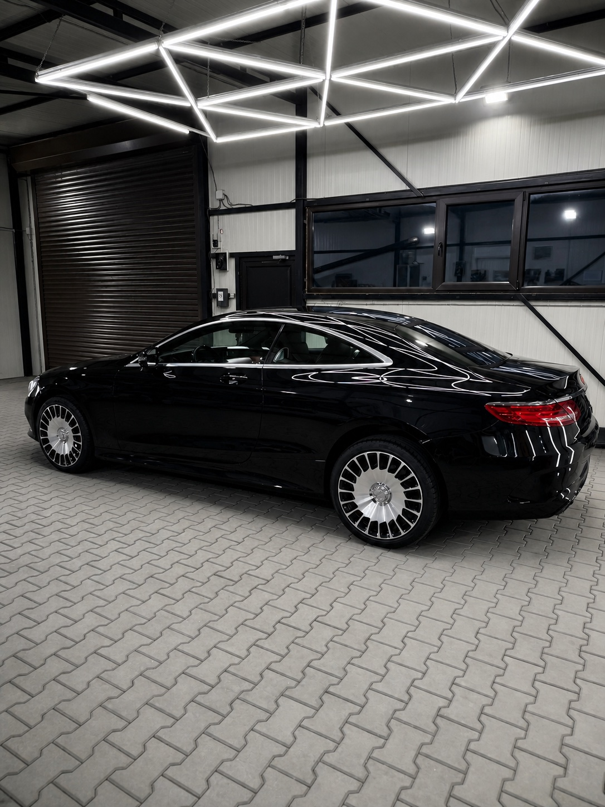
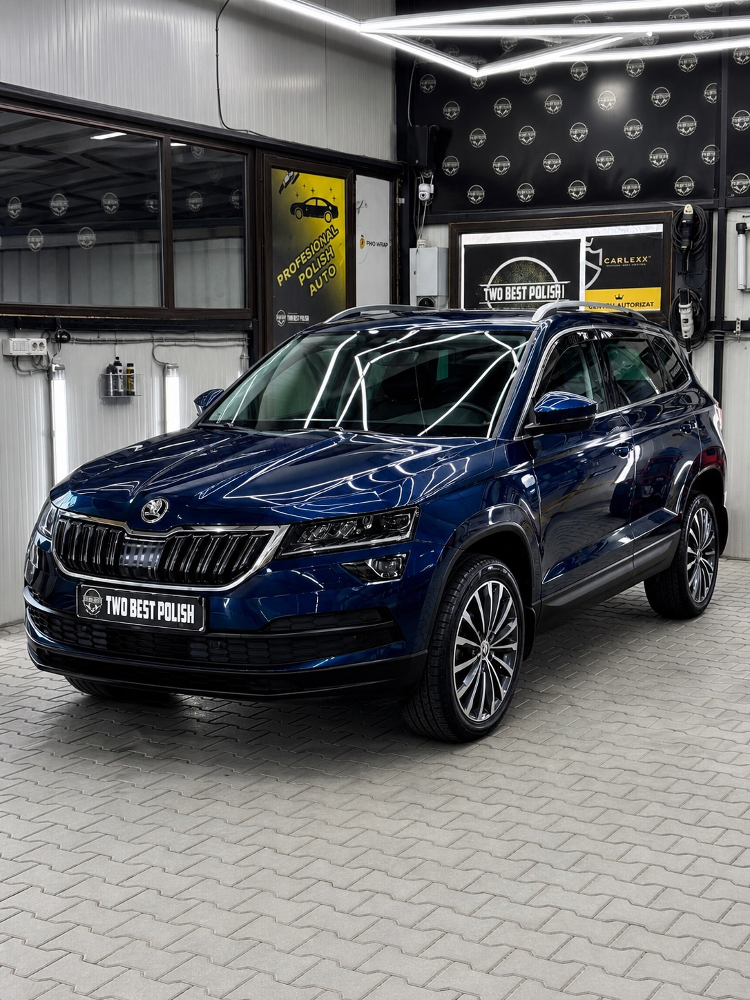
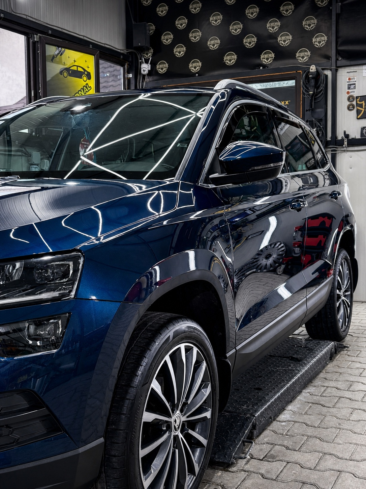
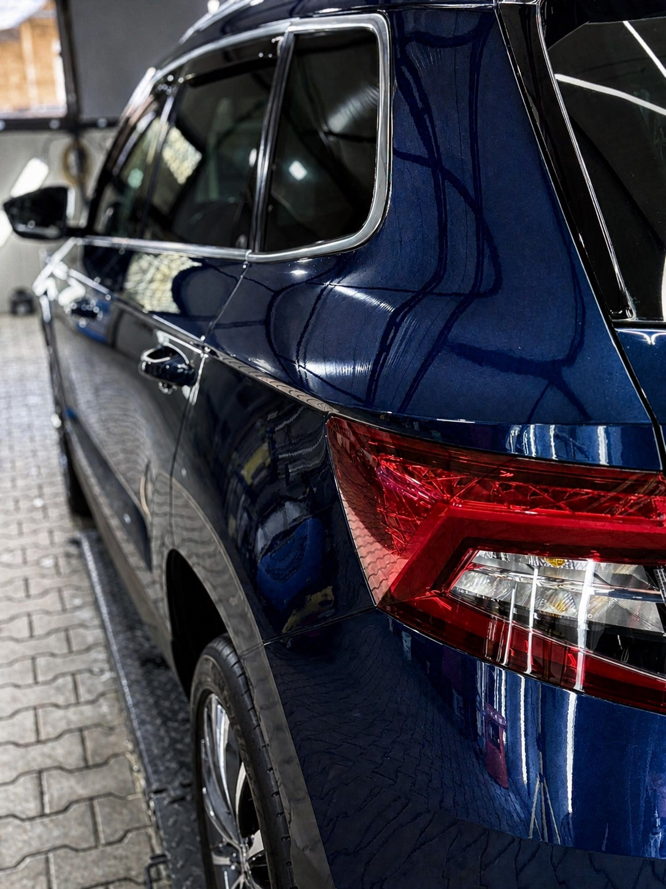

DETAILING
EXTERIOR
Pregătire atentă, decontaminare, curățare jante și finisaj pentru o bază corectă.
DETAILING AUTO · BUGHEA DE JOS
Corecție de lac, protecție și detalii lucrate cu răbdare. Pentru mașini care merită să fie privite din nou.

POLISH AUTO
FĂRĂ SCURTĂTURI
STUDIO / STANDARD
Construim un finisaj care arată bine în lumină, dar rezistă și dincolo de primul selfie. De la pregătire până la ultimul control al suprafeței, lucrăm metodic și fără grabă.
VEZI SERVICIILE ↓
PROIECTE SELECTATE
O selecție din lucrările recente. Fotografii reale, ajustate editorial pentru a arăta cât de clar poate răspunde vopseaua la lumină.




CE PUTEM ÎMBUNĂTĂȚI
Pregătire atentă, decontaminare, curățare jante și finisaj pentru o bază corectă.
Polish adaptat stării vopselei, pentru claritate, profunzime și o reflexie uniformă.
Protecție pentru vopsea și geamuri, aleasă potrivit pentru mașina și rutina ta.
Curățare în profunzime pentru textile, piele și fiecare zonă care contează la volan.
PROGRAMARE / LOCAȚIE
Sună-ne sau trimite-ne un mesaj. Vedem ce are nevoie mașina ta și de unde începem.
0747 401 472 ↗